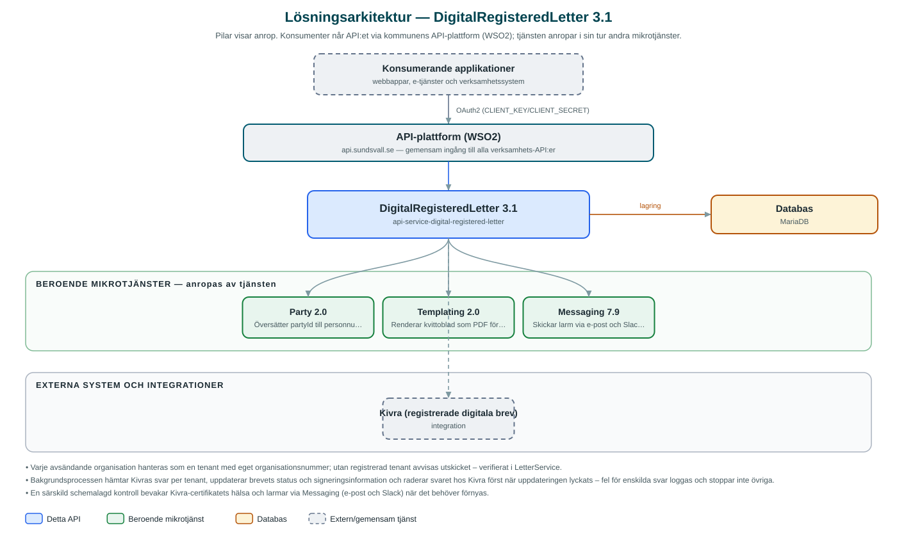

DigitalRegisteredLetter
Skickar digitala rekommenderade brev till invånare via Kivra och följer upp signering, leveransstatus och kvitton.
Om API:et
DigitalRegisteredLetter gör det möjligt för kommunens verksamhetssystem att skicka rekommenderade brev digitalt i stället för på papper. Brevet levereras till mottagarens Kivra-brevlåda som ett registrerat brev, där mottagaren måste legitimera sig för att ta del av innehållet. Tjänsten hanterar hela flödet: kontroll av vilka mottagare som kan nås, utskick, statusuppföljning och kvitto.
Innan utskick kan anroparen kontrollera mottagarnas behörighet – tjänsten översätter partyId till personnummer via Party-tjänsten och frågar Kivra vilka av mottagarna som kan ta emot registrerade brev. Utskicket görs per organisation (tenant): varje avsändande organisation registreras med organisationsnummer och egna Kivra-uppgifter i tjänstens databas.
En schemalagd bakgrundsprocess hämtar löpande svar från Kivra för skickade brev och uppdaterar status och signeringsinformation, till exempel när mottagaren legitimerat sig med BankID. För avslutade brev kan ett kvitto hämtas som PDF, där ett kvittoblad renderas via Templating-tjänsten och slås samman med brevets bilagor.
Det här gör API:et
- Digitala rekommenderade brev – Brev med bilagor skickas som registrerade försändelser till mottagarens Kivra-brevlåda, där legitimering krävs för att öppna dem.
- Behörighetskontroll – Före utskick kan anroparen kontrollera vilka mottagare (partyId) som kan ta emot registrerade brev via Kivra.
- Status och signeringsinformation – Brev kan listas och följas upp per brev, inklusive information om när och hur mottagaren signerat/legitimerat sig.
- Kvitto som PDF – Ett kvitto renderas via Templating-tjänsten och slås samman med brevets bilagor till en samlad PDF.
- Flera avsändarorganisationer – Avsändande organisationer (tenants) administreras via API:et med egna organisationsnummer och Kivra-uppgifter.
- Automatisk uppföljning – En schemalagd process hämtar och bearbetar svar från Kivra och uppdaterar brevens status; bearbetade svar tas bort hos Kivra.
API-dokumentation
API:ets samtliga resurser, parametrar och datamodeller finns beskrivna i en OpenAPI-specifikation som är hämtad ur källkodsförrådet. Den kan utforskas interaktivt i Swagger UI eller laddas ner som YAML.
Teknisk dokumentation
Nedan beskrivs hur tjänsten är uppbyggd, vilka andra tjänster den anropar och vad som krävs för att driftsätta den. Informationen är härledd ur källkoden och dess konfiguration på GitHub.
Arkitektur

API:et är en mikrotjänst (Java 25, Spring Boot via kommunens gemensamma tjänsteplattform dept44 (8.0.8), byggd med Maven). Konsumenter når tjänsten via kommunens gemensamma API-plattform (WSO2) på api.sundsvall.se – tjänsten anropas aldrig direkt. Tjänsten anropar i sin tur andra mikrotjänster i kommunens tjänstelandskap. Lagring: MariaDB med Flyway-migrationer; brev, bilagor, signeringsinformation och avsändarorganisationer (tenants) lagras här. Övriga integrationer som förekommer i koden: Kivra (registrerade digitala brev).
Teknikstack
- Språk: Java 25
- Ramverk: Spring Boot via kommunens gemensamma tjänsteplattform dept44 (8.0.8), byggd med Maven
- Databas: MariaDB med Flyway-migrationer; brev, bilagor, signeringsinformation och avsändarorganisationer (tenants) lagras här
- Övrigt: Apache PDFBox och OpenPDF för sammanslagning av kvitto-PDF:er, Jilt för builders, ShedLock för schemalagda jobb
Beroenden till andra mikrotjänster
Tjänsten anropar följande mikrotjänster. Versionerna är hämtade ur källkodens integrationsklienter.
| Tjänst | Version | Användning |
|---|---|---|
| Party | 2.0 | Översätter partyId till personnummer inför behörighetskontroll och utskick. |
| Templating | 2.0 | Renderar kvittoblad som PDF för avslutade brev. |
| Messaging | 7.9 | Skickar larm via e-post och Slack när tjänstens Kivra-certifikat närmar sig utgång. |
Konfiguration och driftsättning
- application.yml med URL och OAuth2-klientuppgifter för Party, Templating och Messaging samt anslutning till Kivras API
- MariaDB-anslutning; databasschemat versionshanteras med Flyway
- Truststore för certifikatbaserad autentisering mot Kivra; en schemalagd hälsokontroll bevakar certifikatets giltighet
- Schemaläggning för statusuppdatering från Kivra och certifikatkontroll
- Anrop görs per kommun och organisation – municipalityId och organisationsnummer ingår i API-vägarna
Noterbart ur källkoden
- Varje avsändande organisation hanteras som en tenant med eget organisationsnummer; utan registrerad tenant avvisas utskicket – verifierat i LetterService.
- Bakgrundsprocessen hämtar Kivras svar per tenant, uppdaterar brevets status och signeringsinformation och raderar svaret hos Kivra först när uppdateringen lyckats – fel för enskilda svar loggas och stoppar inte övriga.
- En särskild schemalagd kontroll bevakar Kivra-certifikatets hälsa och larmar via Messaging (e-post och Slack) när det behöver förnyas.
- Kvittot byggs ihop av ett renderat kvittoblad från Templating plus brevets bilagor, sammanslagna till en PDF med PDFBox/OpenPDF.
Källkod
Källkoden är öppen och finns hos Sundsvalls kommun på GitHub. I källkodsförrådet finns även instruktioner för att klona, konfigurera och starta tjänsten i egen miljö.